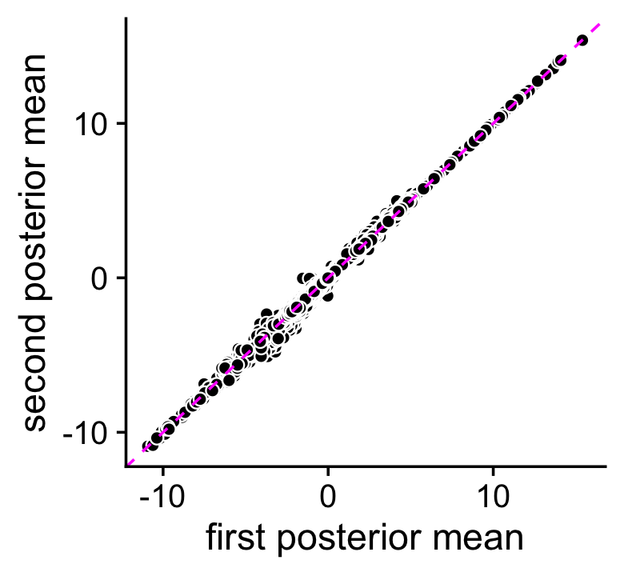
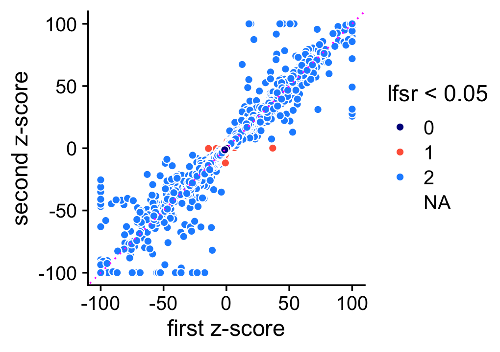
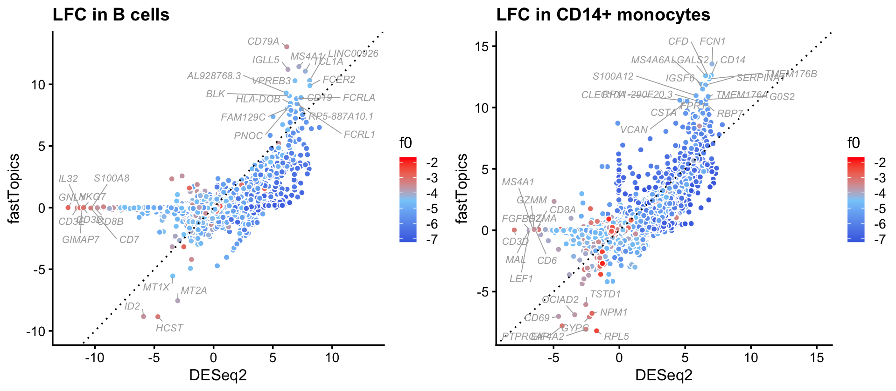

Differential expression analysis using a topic model: illustration in mixture of FACS-purified PBMC data
Peter Carbonetto
Last updated: 2021-11-24
Checks: 7 0
Knit directory: single-cell-topics/analysis/
This reproducible R Markdown analysis was created with workflowr (version 1.6.2). The Checks tab describes the reproducibility checks that were applied when the results were created. The Past versions tab lists the development history.
Great! Since the R Markdown file has been committed to the Git repository, you know the exact version of the code that produced these results.
Great job! The global environment was empty. Objects defined in the global environment can affect the analysis in your R Markdown file in unknown ways. For reproduciblity it’s best to always run the code in an empty environment.
The command set.seed(1) was run prior to running the code in the R Markdown file. Setting a seed ensures that any results that rely on randomness, e.g. subsampling or permutations, are reproducible.
Great job! Recording the operating system, R version, and package versions is critical for reproducibility.
Nice! There were no cached chunks for this analysis, so you can be confident that you successfully produced the results during this run.
Great job! Using relative paths to the files within your workflowr project makes it easier to run your code on other machines.
Great! You are using Git for version control. Tracking code development and connecting the code version to the results is critical for reproducibility.
The results in this page were generated with repository version 9fcc15c. See the Past versions tab to see a history of the changes made to the R Markdown and HTML files.
Note that you need to be careful to ensure that all relevant files for the analysis have been committed to Git prior to generating the results (you can use wflow_publish or wflow_git_commit). workflowr only checks the R Markdown file, but you know if there are other scripts or data files that it depends on. Below is the status of the Git repository when the results were generated:
Ignored files:
Ignored: data/droplet.RData
Ignored: data/pbmc_68k.RData
Ignored: data/pbmc_purified.RData
Ignored: data/pulseseq.RData
Ignored: output/droplet/diff-count-droplet.RData
Ignored: output/droplet/fits-droplet.RData
Ignored: output/droplet/rds/
Ignored: output/pbmc-68k/fits-pbmc-68k.RData
Ignored: output/pbmc-68k/rds/
Ignored: output/pbmc-purified/fits-pbmc-purified.RData
Ignored: output/pbmc-purified/rds/
Ignored: output/pulseseq/diff-count-pulseseq.RData
Ignored: output/pulseseq/fits-pulseseq.RData
Ignored: output/pulseseq/rds/
Untracked files:
Untracked: analysis/de_analysis_detailed_look_cache/
Untracked: analysis/de_analysis_detailed_look_more_cache/
Untracked: plots/
Unstaged changes:
Modified: analysis/temp6.R
Note that any generated files, e.g. HTML, png, CSS, etc., are not included in this status report because it is ok for generated content to have uncommitted changes.
These are the previous versions of the repository in which changes were made to the R Markdown (analysis/de_analysis_purified_pbmc.Rmd) and HTML (docs/de_analysis_purified_pbmc.html) files. If you’ve configured a remote Git repository (see ?wflow_git_remote), click on the hyperlinks in the table below to view the files as they were in that past version.
| File | Version | Author | Date | Message |
|---|---|---|---|---|
| Rmd | 9fcc15c | Peter Carbonetto | 2021-11-24 | workflowr::wflow_publish(“de_analysis_purified_pbmc.Rmd”, verbose = TRUE) |
| Rmd | 7b34362 | Peter Carbonetto | 2021-11-24 | Working on comparison of deseq2 and fasttopics in B cells in de_analysis_purified_pbmc analysis. |
| Rmd | 6fbc554 | Peter Carbonetto | 2021-11-24 | Working on deseq2 vs fasttopics comparison in de_analysis_purified_pbmc analysis. |
| Rmd | c1e0931 | Peter Carbonetto | 2021-11-23 | Revised explanatory test in de_analysis_purified_pbmc analysis. |
| Rmd | fb81385 | Peter Carbonetto | 2021-11-23 | Made a few improvements to the volcano plot in de_analysis_purified_pbmc analysis. |
| Rmd | a11826f | Peter Carbonetto | 2021-11-23 | Added scatterplot to de_analysis_purified_pbmc analysis. |
| Rmd | 161d0e9 | Peter Carbonetto | 2021-11-23 | Made a few improvements the b-cells scatterplot in the de_analysis_purified_pbmc analysis. |
| Rmd | 760f6ad | Peter Carbonetto | 2021-11-23 | Added a z-score q-q plot to de_analysis_purified_pbmc analysis. |
| Rmd | 5fa98f8 | Peter Carbonetto | 2021-11-23 | Working on de_analysis_purified_pbmc analysis. |
| html | 5fa98f8 | Peter Carbonetto | 2021-11-23 | Working on de_analysis_purified_pbmc analysis. |
| Rmd | c30816e | Peter Carbonetto | 2021-11-21 | A few small edits. |
| html | 0d0c720 | Peter Carbonetto | 2021-11-21 | Added scatterplots assessing accuracy of Monte Carlo estimates to |
| Rmd | f7a5a86 | Peter Carbonetto | 2021-11-21 | workflowr::wflow_publish(“de_analysis_purified_pbmc.Rmd”) |
| html | 1917832 | Peter Carbonetto | 2021-11-21 | Working on de_analysis_purified_pbmc analysis. |
| Rmd | 90c6584 | Peter Carbonetto | 2021-11-21 | workflowr::wflow_publish(“de_analysis_purified_pbmc.Rmd”, verbose = TRUE) |
| Rmd | 3143481 | Peter Carbonetto | 2021-11-21 | Working on the de_analysis_purified_pbmc analysis. |
| Rmd | a16fdf9 | Peter Carbonetto | 2021-11-20 | Added structure plot to de_analysis_purified_pbmc analysis. |
| html | e1ab3a0 | Peter Carbonetto | 2021-11-08 | Built the initial de_analysis_purified_pbmc analysis page. |
| html | 2befadb | Peter Carbonetto | 2021-11-08 | Added link to overview page. |
| Rmd | 71e267d | Peter Carbonetto | 2021-11-08 | workflowr::wflow_publish(“index.Rmd”) |
The aim of this analysis is to understand by way of illustration the differences between a “classical” differential expresion analysis comparing expression among cell types (here we implement this “classical” DE analysis using DESEq2), and a differential expression analysis using the topic model, which allows for grades of membership to cell types (or more generally cellular expression factors).
Begin by loading the packages and some function definitions used in the analysis.
library(Matrix)
library(DESeq2)
library(fastTopics)
library(ggplot2)
library(ggrepel)
library(cowplot)
source("../code/de_analysis_functions.R")Load count data and topic model fit
Load the UMI count data for 94,655 cells and 21,952 genes.
load("../data/pbmc_purified.RData")
dim(counts)
# [1] 94655 21952Load the \(K = 6\) Poisson NMF model fit to these data, and convert the Poisson NMF model fit to a multinomial topic model fit.
fit <- readRDS(file.path("../output/pbmc-purified/rds",
"fit-pbmc-purified-scd-ex-k=6.rds"))$fit
fit <- poisson2multinom(fit)The cells are subdivided, based on FACS sorting, into 10 “cell types”. Several of the cell types are virtually indistinguishable based on their gene expression profiles alone, so we combine these indistinguishable cell types into a single “T cell” cell type. This results in 5 predefined cell types, the majority of which are T cells:
set.seed(1)
celltype <- as.character(samples$celltype)
celltype[celltype == "CD4+ T Helper2" |
celltype == "CD4+/CD45RO+ Memory" |
celltype == "CD8+/CD45RA+ Naive Cytotoxic" |
celltype == "CD4+/CD45RA+/CD25- Naive T" |
celltype == "CD8+ Cytotoxic T" |
celltype == "CD4+/CD25 T Reg"] <- "T cell"
celltype <- factor(celltype,
c("CD19+ B","CD14+ Monocyte","CD34+","CD56+ NK","T cell"))
table(celltype)
# celltype
# CD19+ B CD14+ Monocyte CD34+ CD56+ NK T cell
# 10085 2612 9232 8385 64341Structure plot
Next we visualize the structure inferred by the $K = $ topic model using a “structure plot”. The cells in this plot are arranged horizontally according to their predefined cell type to relate the topics to these predefinend cell types:
topic_colors <- c("gold","forestgreen","dodgerblue","gray",
"darkmagenta","violet")
topics <- c(5,3,2,4,1,6)
rows <- sort(c(sample(which(celltype == "CD19+ B"),500),
sample(which(celltype == "CD14+ Monocyte"),250),
sample(which(celltype == "CD34+"),500),
sample(which(celltype == "CD56+ NK"),400),
sample(which(celltype == "T cell"),1000)))
p1 <- structure_plot(select_loadings(fit,loadings = rows),
grouping = celltype[rows],
topics = topics,colors = topic_colors[topics],
perplexity = c(70,30,30,30,70),n = Inf,gap = 30,
num_threads = 4,verbose = FALSE)
print(p1)
| Version | Author | Date |
|---|---|---|
| 1917832 | Peter Carbonetto | 2021-11-21 |
Some of the topics correspond very closely to the predefined cell types. In particular, topics 1 through 4 closely correspond, respectively, to T cells, CD14+ monocytes (myeloid cells), B cells and natural killer (NK) cells.
Topic 5 (violet) closely corresponds to the “CD34+” FACS cell type, but from the structure plot we observe many cells labeled as “CD34+” with little to no contribution from topic 5, which suggests mislabeling of the CD34+ cells.
Topic 6 (magenta) does not correspond to any FACS cell type and as we will see it captures a different characteristic of the cells—specifically, abundance of ribosomal protein genes. Therefore, the DE results for topics 1–4 are most comparable to a classical DE analysis, and we begin with these comparisons. But before doing this we first assess accuracy of the MCMC computations used in the topic-model-based DE analysis.
Assessing accuracy of the Monte Carlo estimates
The topic-model-based DE analysis was performed previously by simulating the posterior distribution of the LFC statistics via MCMC. Here we assess accuracy of the MCMC calculations. We performed the DE analysis twice (using different seeds, each with 100,000 Monte Carlo samples), so we can compare the posterior mean estimates and z-scores returned by the two de_analysis runs.
load("../output/pbmc-purified/de-pbmc-purified-seed=1.RData")
de1 <- de
load("../output/pbmc-purified/de-pbmc-purified-seed=2.RData")
de2 <- de
rm(de)The MCMC estimates of the posterior mean log-fold change (LFC) estimates are largely consistent:
pdat <- data.frame(postmean1 = as.vector(de1$postmean),
postmean2 = as.vector(de2$postmean))
ggplot(pdat,aes(x = postmean1,y = postmean2)) +
geom_point(shape = 21,color = "white",fill = "black",size = 2) +
geom_abline(intercept = 0,slope = 1,color = "magenta",linetype = "dashed") +
labs(x = "first posterior mean",y = "second posterior mean") +
theme_cowplot()
The \(z\)-scores on the other hand are estimated less consistently, presumably because accurately estimating uncertainty is harder. Still, the \(z\)-scores are still are consistent enough in that it is rare for an LFC to have an lfsr less than 0.05 in one MCMC simulation and not the other (these are the red points in the scatterplot). Note for better visualization \(z\)-scores larger than 100 (or smaller than -100) are shown as 100 (or -100) in this plot.
pdat <- data.frame(z1 = clamp(as.vector(de1$z),-100,+100),
z2 = clamp(as.vector(de2$z),-100,+100),
lfsr = factor((de1$lfsr < 0.05) + (de2$lfsr < 0.05)))
ggplot(pdat,aes(x = z1,y = z2,fill = lfsr)) +
geom_point(shape = 21,color = "white",size = 2) +
geom_abline(intercept = 0,slope = 1,color = "magenta",linetype = "dotted") +
scale_fill_manual(values = c("darkblue","tomato","dodgerblue"),
na.value = "white") +
labs(x = "first z-score",y = "second z-score",fill = "lfsr < 0.05") +
theme_cowplot()
Moving forward, when the two z-scores disagree, we use the one that is nearer to zero.
de <- de1[c("f0","postmean","z","lfsr")]
class(de) <- c("topic_model_de_analysis","list")
i <- which(abs(de2$z) < abs(de1$z))
de$postmean[i] <- de2$postmean[i]
de$z[i] <- de2$z[i]
de$lfsr[i] <- de$lfsr[i]Load DESeq2 results for all cell types
We load the results of the DESeq2 analyes, and combine them into two data frames: a data frame for the posterior mean LFC estimates, and a data frame for the z-scores.
load("../output/pbmc-purified/deseq2-pbmc-purified.RData")
celltypes <- names(deseq)
n <- length(celltypes)
p <- nrow(genes)
deseq2 <- list(postmean = matrix(0,p,n),
z = matrix(0,p,n))
rownames(deseq2$postmean) <- genes$ensembl
rownames(deseq2$z) <- genes$ensembl
colnames(deseq2$postmean) <- celltypes
colnames(deseq2$z) <- celltypes
for (i in 1:n) {
deseq2$postmean[,i] <- deseq[[i]]$log2FoldChange
deseq2$z[,i] <- with(deseq[[i]],log2FoldChange/lfcSE)
}
deseq <- deseq2
rm(deseq2)Since we filtered out a few lowly expressed genes before running DESeq2, we subset the fastTopics results to match up with DESeq2.
rows <- match(rownames(deseq$z),rownames(de$z))
de$f0 <- de$f0[rows]
de$postmean <- de$postmean[rows,]
de$z <- de$z[rows,]
de$lfsr <- de$lfsr[rows,]DESeq2 vs. fastTopics
Comparing the distributions of all \(z\)-scores, we see that the DE analysis allowing for grades of membership has many more \(z\)-scores near zero, yet still has (Because there are a few extremely large and extremely small \(z\)-scores, for better visualization z-scores larger than 100 in magnitude are shown as 100 or -100.)
pdat <-
data.frame(deseq =quantile(deseq$z,seq(0,1,length.out=1000),na.rm=TRUE),
fasttopics=quantile(de$z,seq(0,1,length.out=1000),na.rm=TRUE))
pdat <- transform(pdat,
deseq = clamp(deseq,-100,+100),
fasttopics = clamp(fasttopics,-100,+100))
ggplot(pdat,aes(x = deseq,y = fasttopics)) +
geom_point() +
geom_abline(intercept = 0,slope = 1,color = "magenta",linetype = "dotted") +
labs(x = "DESeq2",y = "fastTopics",title = "z-score quantiles") +
theme_cowplot()Now let’s look closely at the DESeq2 and fastTopics results for B cells, one of the cell types that closely corresponds to a topic (topic 3). Here we focus on genes for which the \(z\)-score is greater than 2 in at least one of the analyses. Genes are colored according to the LFSR estimated in the fastTopics analysis ().
i <- "CD19+ B"
k <- "k3"
pdat <- data.frame(gene = genes$symbol,
postmean.deseq = deseq$postmean[,i],
postmean.fasttopics = de$postmean[,k],
z.deseq = deseq$z[,i],
z.fasttopics = de$z[,k],
lfsr = cut(de$lfsr[,k],c(-1,0.001,0.01,0.05,Inf)),
stringsAsFactors = FALSE)
j <- which(pdat$postmean.fasttopics < 8)
pdat[j,"gene"] <- ""
pdat[genes$symbol == "HOPX","gene"] <- "HOPX"
pdat <- subset(pdat,abs(z.deseq) > 2 | abs(z.fasttopics) > 2)
ggplot(pdat,aes(x = postmean.deseq,y = postmean.fasttopics,
fill = lfsr,label = gene)) +
geom_point(shape = 21,color = "white") +
geom_abline(intercept = 0,slope = 1,color = "black",linetype = "dotted") +
geom_text_repel(color = "darkgray",size = 2.25,fontface = "italic",
segment.color = "darkgray",segment.size = 0.25,
min.segment.length = 0,max.overlaps = Inf,na.rm = TRUE) +
scale_fill_manual(values = c("deepskyblue","gold","orange","coral"),
na.value = "gainsboro") +
xlim(-12.3,13.1) +
ylim(-10,13.1) +
labs(x = "DESeq2",y = "fastTopics",
title = "LFC in B cells") +
theme_cowplot()
A few interesting themes emerge from this plot:
Many genes with large LFC in the DESeq2, particularly genes with very negative LFCs (genes with large decreases in expression in B cells) have zero LFC in the fastTopics analysis.
Most of the LFC estimates in the fastTopics DE analysis agree with, but are lower than, the LFC estimates in the DESeq2 analysis. The one exception is the genes with the largest expression increases in B cells: both DESeq2 and fastTopics largely identifies the same genes with the largest increases in expression in B cells, but the LFC is higher for most of these genes in the fastTopics analysis.
I highlighted here the HOPX gene because this is a gene that was identified in the fastTopics analysis, but not DESeq2 analysis, presumably because this gene is more strongly expressed in cells that are not actually labeled as “B cell” by FACS.
The fastTopics DE analysis for the “B cells” topic is summarized in the following volcano plot:
pdat <- data.frame(gene = genes$symbol,
postmean = de$postmean[,k],
z = pmin(150,abs(de$z[,k])),
lfsr = cut(de$lfsr[,k],c(-1,0.001,0.01,0.05,Inf)),
stringsAsFactors = FALSE)
j <- which(with(pdat,!(postmean > 8 | z > 75)))
pdat[j,"gene"] <- ""
ggplot(pdat,aes(x = postmean,y = z,fill = lfsr,label = gene)) +
geom_point(shape = 21,color = "white",size = 1.5) +
geom_text_repel(color = "darkgray",size = 2.25,fontface = "italic",
segment.color = "darkgray",segment.size = 0.25,
min.segment.length = 0,max.overlaps = Inf,na.rm = TRUE) +
scale_y_continuous(trans = "sqrt",breaks = c(1,2,5,10,20,50,100)) +
scale_fill_manual(values = c("deepskyblue","gold","orange","tomato"),
na.value = "gainsboro") +
labs(x = "posterior mean LFC",y = "|z-score|") +
theme_cowplot()
# Warning: Removed 323 rows containing missing values (geom_point).
sessionInfo()
# R version 3.6.2 (2019-12-12)
# Platform: x86_64-apple-darwin15.6.0 (64-bit)
# Running under: macOS Catalina 10.15.7
#
# Matrix products: default
# BLAS: /Library/Frameworks/R.framework/Versions/3.6/Resources/lib/libRblas.0.dylib
# LAPACK: /Library/Frameworks/R.framework/Versions/3.6/Resources/lib/libRlapack.dylib
#
# locale:
# [1] en_US.UTF-8/en_US.UTF-8/en_US.UTF-8/C/en_US.UTF-8/en_US.UTF-8
#
# attached base packages:
# [1] parallel stats4 stats graphics grDevices utils datasets
# [8] methods base
#
# other attached packages:
# [1] cowplot_1.0.0 ggrepel_0.9.1
# [3] ggplot2_3.3.5 fastTopics_0.6-79
# [5] DESeq2_1.33.5 SummarizedExperiment_1.16.1
# [7] DelayedArray_0.12.3 BiocParallel_1.18.1
# [9] matrixStats_0.61.0 Biobase_2.46.0
# [11] GenomicRanges_1.38.0 GenomeInfoDb_1.22.1
# [13] IRanges_2.20.2 S4Vectors_0.24.4
# [15] BiocGenerics_0.32.0 Matrix_1.2-18
#
# loaded via a namespace (and not attached):
# [1] Rtsne_0.15 colorspace_1.4-1 ellipsis_0.3.2
# [4] rprojroot_1.3-2 XVector_0.26.0 fs_1.3.1
# [7] farver_2.0.1 MatrixModels_0.4-1 bit64_0.9-7
# [10] AnnotationDbi_1.48.0 fansi_0.4.0 splines_3.6.2
# [13] geneplotter_1.64.0 knitr_1.26 jsonlite_1.7.2
# [16] workflowr_1.6.2 mcmc_0.9-6 annotate_1.64.0
# [19] ashr_2.2-51 compiler_3.6.2 httr_1.4.2
# [22] backports_1.1.5 assertthat_0.2.1 lazyeval_0.2.2
# [25] later_1.0.0 htmltools_0.4.0 quantreg_5.54
# [28] prettyunits_1.1.1 tools_3.6.2 coda_0.19-3
# [31] gtable_0.3.0 glue_1.4.2 GenomeInfoDbData_1.2.2
# [34] dplyr_1.0.7 Rcpp_1.0.7 vctrs_0.3.8
# [37] xfun_0.11 stringr_1.4.0 lifecycle_1.0.0
# [40] irlba_2.3.3 XML_3.99-0.3 zlibbioc_1.32.0
# [43] MASS_7.3-51.4 scales_1.1.0 hms_1.1.0
# [46] promises_1.1.0 SparseM_1.78 RColorBrewer_1.1-2
# [49] yaml_2.2.0 memoise_1.1.0 pbapply_1.5-1
# [52] stringi_1.4.3 RSQLite_2.2.0 SQUAREM_2017.10-1
# [55] genefilter_1.68.0 truncnorm_1.0-8 rlang_0.4.11
# [58] pkgconfig_2.0.3 bitops_1.0-6 evaluate_0.14
# [61] lattice_0.20-38 invgamma_1.1 purrr_0.3.4
# [64] htmlwidgets_1.5.1 labeling_0.3 bit_1.1-15.2
# [67] tidyselect_1.1.1 magrittr_2.0.1 R6_2.4.1
# [70] generics_0.0.2 DBI_1.1.0 pillar_1.6.2
# [73] whisker_0.4 withr_2.4.2 survival_3.1-8
# [76] RCurl_1.98-1.2 mixsqp_0.3-46 tibble_3.1.3
# [79] crayon_1.4.1 utf8_1.1.4 plotly_4.9.2
# [82] rmarkdown_2.3 progress_1.2.2 locfit_1.5-9.4
# [85] grid_3.6.2 data.table_1.12.8 blob_1.2.1
# [88] git2r_0.26.1 digest_0.6.23 xtable_1.8-4
# [91] tidyr_1.1.3 httpuv_1.5.2 MCMCpack_1.4-5
# [94] RcppParallel_4.4.2 munsell_0.5.0 viridisLite_0.3.0
# [97] quadprog_1.5-8